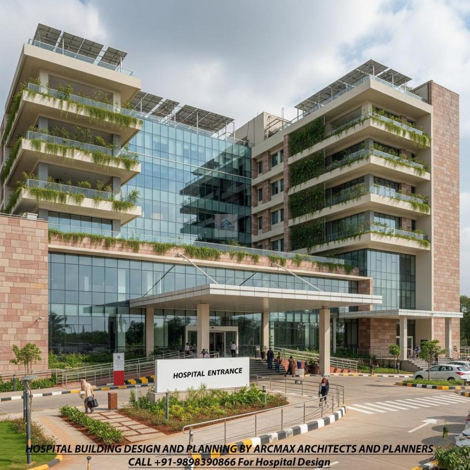
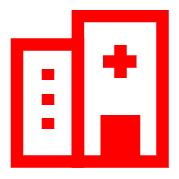
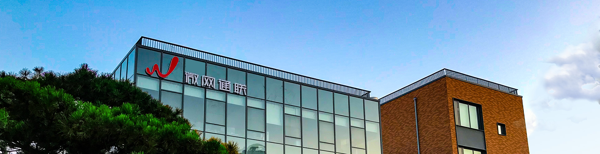

医院数字化-通信解决方案
本地化部署消息管理平台【GMP】
构建安全、高效、智能的医疗通信新引擎
助力医院数字化转型与信创升级
微网通联
51welink.com
2026

56+
服务医院
10+
行业经验
99%
客户满意度

CONTENTS
目录
01
医院通信现状
系统孤岛、成本高昂、安全合规、信创需求四大挑战
02
本地化部署消息管理平台【GMP】
专为医院打造的统一管理通信枢纽
03
结合医院场景的核心应用方案
患者服务、临床协同、运营管理的全场景覆盖
04
GMP平台核心产品优势
数据安全、信创适配、高性能、高可用架构
05
产品版本与部署建议
基础版、专业版、旗舰版满足不同规模医院需求
06
医院客户成功案例
56家医院客户的信赖选择与服务验证

CHALLENGES
医院通信现状
在医疗信息化、数字化转型的快速推进下，医院内部建立了海量的业务系统（HIS、LIS、PACS、EMR、OA等），但在通信和消息触达方面面临显著挑战：
系统对接繁琐，形成"消息孤岛"
临床服务、医院管理等各子系统独立运作，每增加一个消息渠道（短信、微信、邮件）都需要各业务系统重复对接，导致 接口复杂、研发及运维成本高昂 。
多系统重复开发，维护困难
信创改造需求
信创改造需求： 随着国家对医疗机构信创要求的提高，医院底层软硬件需 满足全面国产化适配，包括服务器、操作系统、数据库、中间件及终端设备等核心组件的全面自主可控替代，确保从芯片到应用层的全栈信创生态兼容。
医疗数据涉及国家安全与公民隐私，核心技术自主可控可避免"卡脖子"风险
数据安全与隐私保护要求严苛
医疗业务涉及患者生命安全与个人隐私，传统的公有云SaaS消息服务 无法满足医院数据"不出域"的合规要求 。
等保三级、数据安全法合规要求
高可用需求
系统必须满足7×24小时不间断运行的严苛要求，具备故障自动切换、数据实时备份与秒级恢复能力，确保门诊、急诊、重症监护等关键业务在任何极端情况下均持续可用。
7×24小时高可用是医院核心业务的刚性底线

PLATFORM OVERVIEW
本地化部署消息管理平台【GMP】
平台定位
微网通联本地化部署消息管理平台【GMP】是一款基于 跨平台Java技术开发 的消息发送与管理平台，专为满足 安全性、保密性要求极高的企事业单位 （如医院）的本地化部署需求而精心打造。
核心能力
平台通过 一次API接口调用 ，即可为医院打通短信、微信公众号、微信小程序、富媒体、语音通知、5G消息等全渠道通信能力。
短信
微信生态
语音通知
富媒体
5G消息
组合消息
统一消息枢纽
作为医院统一的消息进出口枢纽，将临床数据、医院管理信息高效、精准地触达医护人员与患者。
构建全院级智慧通信新引擎
打破消息孤岛，统一接口管理
降低系统对接复杂度
数据处理能力
1亿+
日处理能力
2000+
秒级并发

PATIENT SERVICE SCENARIOS
患者公众服务场景：全流程就医提醒
就医全流程消息触达
通过平台将门急诊各类通知精准发送至患者手机或微信， 提升患者体验与满意度 。
挂号成功通知
排队叫号提醒
缴费信息通知
检验报告出具
患者关怀与慢病随访
结合患者标签（老年人、特定慢病患者等），通过多渠道进行 体检提醒、慢病复诊通知及健康知识宣教 ，实现精准化医疗服务。
体检提醒
复诊通知
健康宣教
策略化路由降低成本
微信优先，短信托底的组合消息策略，在保障100%触达的同时，为医院大幅节省短信通信成本。
发送策略示例：
1
优先通过医院微信公众号推送
2
若患者未关注或推送失败
3
系统自动补发短信
60%
成本节省
100%
消息触达
消息发送流程
业务系统
HIS/LIS/PACS
GMP平台
统一路由
患者终端
微信/短信

CLINICAL COLLABORATION SCENARIOS
临床与业务协同场景：内部高效流转
危急值与临床预警
Critical Value Alert
当LIS（检验信息系统）或重症监护系统产生危急值时，GMP平台可 瞬间通过短信、语音通知等渠道 将预警信息推送到主治医生与护士的终端 ，确保医疗干预的及时性。
预警信息推送渠道：
短信推送
企业微信
APP消息
<3秒
预警推送时效
24/7
全天候监控
会诊与手术通知
Consultation & Surgery Notification
医生工作站（CIS）和手术麻醉系统可通过GMP平台，向跨科室专家 自动发送远程会诊邀请、手术安排时间等协同信息 ，提升医疗团队协作效率。
远程会诊邀请
自动推送会诊时间、地点、患者信息
手术安排通知
术前提醒、术中协调、术后跟进
多学科协作（MDT）
复杂病例讨论、专家联合会诊
核心价值：通过即时消息推送，将临床响应时间从分钟级缩短至秒级，显著提升医疗安全水平和救治效率
OPERATIONS & IT MANAGEMENT
医院运营与IT管理场景：自动化预警
IT系统与机房监控告警
保障医院7×24小时连续服务
医院信息中心的服务器、网络设备出现异常时，GMP平台通过 邮件告警或短信通知运维人员 ，实现故障的快速响应与处理。
服务器监控
CPU/内存/磁盘使用率异常告警
网络设备监控
交换机/路由器/防火墙状态监测
数据库监控
连接数/慢查询/备份状态监控
机房环境监控
温湿度/UPS/空调状态告警
行政OA办公流转
提升行政管理效率
结合医院内部OA系统，实现 公文流转、排班通知、会议通知、薪资发放通知 等行政办公消息的高效下发。
公文流转
排班通知
会议通知
薪资通知
考勤提醒
审批提醒
运维效率提升
故障响应时间
缩短80%
人工干预次数
减少70%
系统可用性
99.99%
告警分级机制
紧急告警
短信+电话
重要告警
短信+语音通知+企业微信
一般告警
短信+企业微信
提示信息
企业微信

CORE ADVANTAGES (1/2)
核心产品优势（一）：数据安全与信创适配
极高的数据安全与隐私保护
满足等保三级要求
纯私有化本地部署
系统、数据库 完全部署在医院内部机房 ，保障核心医疗数据绝对不出域，从物理和网络层面隔绝外部风险。
全面支持国密算法
平台支持 SM2、SM3、SM4国密加密算法 ，针对患者手机号、敏感病历数据等实行底层数据加密及脱敏显示。
SM2
SM3
SM4
全栈信创环境适配支持
国产化自主可控
全面适配信创软硬件环境， 满足公立医院的国产化采购及合规要求 。
国产中间件
东方通WEB
国产操作系统
银河麒麟
统信UOS
国产数据库
合规认证
等保三级 | 数据安全法 | 个人信息保护法
100%
国产化适配

宝蓝德BES
东方通MQ
达梦
华为数据库gaussdb
OceanBase
CORE ADVANTAGES (2/2)
核心产品优势（二）：高性能与高可用架构
亿级并发处理与高可用架构
保障不宕机，业务零中断
1亿+
日处理能力
2000+
秒级并发
平台具备 日处理1亿条以上、秒级2000+并发 的高性能处理能力，轻松应对早高峰挂号、集中出具检验报告等消息迸发场景。
集群容灾式部署
多重保障，自动切换
同城双活部署
双中心同时运行，互为备份
两地三中心架构
生产中心+同城灾备+异地灾备
智能故障切换
主通道故障自动切换至备用资源
在线自动恢复
系统故障自动检测与恢复
易于与医院信息总线（HSB）集成
提供标准化接口设计，支持多种协议，轻松对接医院的集成平台（ESB/HSB/HIS等系统），能够无缝融入医院现有的信息化生态。
HTTP/HTTPS
CMPP
TCP
SDK/API
系统架构特点
微服务架构
模块化设计，易于扩展
负载均衡
任一节点支持负载均衡、热备
高性能缓存
分布式缓存技术，提升响应速度
二次开发支持
预留接口，支持定制化开发
服务承诺：确保医疗核心通信业务"零"中断，7×24小时稳定运行
99.99%
系统可用性

PRODUCT VERSIONS
产品版本与部署建议
针对不同规模医院的信息化发展阶段，微网通联提供 灵活的版本分类 ，满足从中小型医院到三甲医院的差异化需求。
基础版
Basic Edition
适合中小型医院
核心功能：
短彩信收发与查询
语音短信功能
后台账户管理
通道管理
数据管理
部署配置：
2台服务器（8核16G）
MySQL数据库
应用场景
基础挂号、报告短信提醒
专业版
Professional Edition
适合中大型医院
核心功能：
基础版全部功能
视频短信
邮件消息
角色权限管理
统计报表
消息模板设置
部署配置：
3台服务器（8核16G）
MySQL/Oracle
应用场景
临床与行政多部门精细化使用
旗舰版
Enterprise Edition
适合三甲及大型医院
核心功能：
专业版全部功能
微信消息（公众号/小程序）
组合消息策略
同城双活高可用部署
信创环境部署
5G消息功能
部署配置：
≥4台服务器（8核16G）
MySQL/Oracle/达梦
应用场景
顶级安全智慧通信中枢

SUCCESS STORIES
医院客户成功案例
典型综合医院案例
三甲医院与区域医疗中心
内蒙古自治区人民医院
省级三甲医院，短信平台信息发送服务
北京清华长庚医院
清华大学附属医院，信息服务，短信平台
长沙市中心医院
市级三甲医院，信息服务，短信平台
青岛市妇女儿童医院
专科医院，信息服务
首都医科大学附属北京安定医院
精神专科医院，信息服务 ，短信平台
中南大学湘雅三医院
湘雅系三甲医院，短信平台
专科医院与体检中心
多元化医疗服务机构
爱尔眼科系列
多家分院
美年大健康系列
体检中心
口腔医院
绍兴市口腔医院
妇产医院
阜宁大爱妇产医院
客户分布统计
综合三甲医院
35%
专科医院
25%
体检中心
20%
其他医疗机构
20%
服务成果
56
服务医院客户
覆盖全国各地
10+
行业服务年限
深耕医疗领域
99%
客户满意度
持续服务续签
微网通联已成功服务56家医院客户，涵盖综合医院、专科医院、体检中心等多种类型，服务范围覆盖全国各省市


微网通联深耕企业级通信十八余年
已成功助力多家医院、银行、政务类客户，实现通信架构的数字化升级
安全可靠
私有化部署，国密加密
稳定高效
亿级并发，99.99%可用
极致服务
7×24H全天候支持
51welink.com
7×24H支持